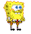

SpongeBob SquarePants is a fictional character and the main protagonist of the Nickelodeon animated television series of the same name. He is characterized by his optimistic and childlike attitude. He lives in the fictional underwater city of Bikini Bottom, where he regularly gets into absurd and humorous situations. He is voiced by Tom Kenny. SpongeBob was created by Stephen Hillenburg, an artist and marine science educator. SpongeBob's name is derived from "Bob the Sponge", a character from Hillenburg's unpublished educational book The Intertidal Zone. Hillenburg created the book while teaching marine biology to visitors of the Ocean Institute in Dana Point, California, during the 1980s. After working as a director on the animated series Rocko's Modern Life, Hillenburg began developing his own animated series based on The Intertidal Zone. SpongeBob's first appearance was in the SpongeBob SquarePants pilot episode, "Help Wanted", which premiered on May 1, 1999. SpongeBob has become popular among children and adults. The character has garnered a positive response from media critics and is frequently named as one of the greatest cartoon characters of all time.

SpongeBob Schwammkopf ist der optimistische, gelbe Hauptcharakter der gleichnamigen Kult-Zeichentrickserie, die von dem Meeresbiologen und Animator Stephen Hillenburg kreiert wurde. Er lebt in einer fahrbaren Ananas tief auf dem Meeresgrund in der fiktiven Stadt Bikini Bottom. Zusammen mit seinem besten Freund, dem leicht verpeilten Seestern Patrick Star, erlebt er täglich chaotische Abenteuer. SpongeBob arbeitet mit absoluter Hingabe als Burgerbrater in der Krossen Krabbe, wo er die berühmten Krabbenburger nach einem streng geheimen Rezept zubereitet. Sein Chef, Mr. Krabs, ist extrem geizig, während sein mürrischer Kollege und Nachbar Thaddäus Tentakel regelmäßig durch SpongeBobs hyperaktive Art am Rande eines Nervenzusammenbruchs steht. spongebob youtube channel